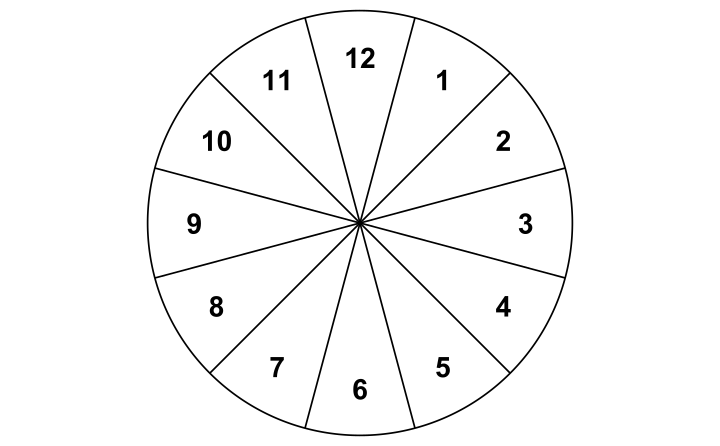
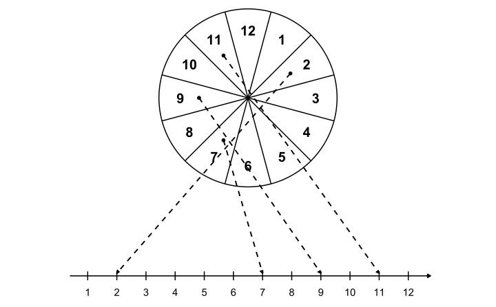
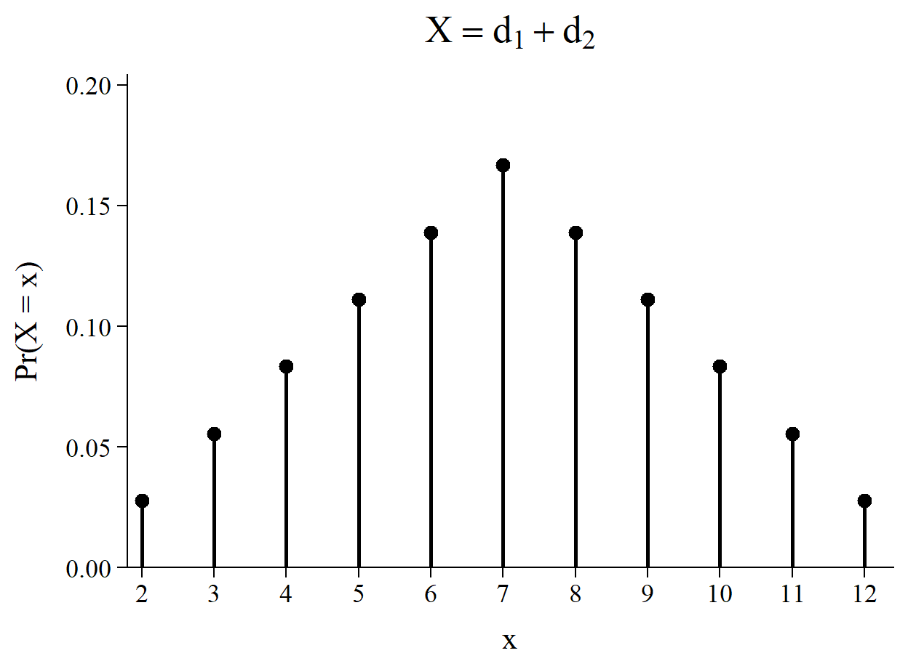
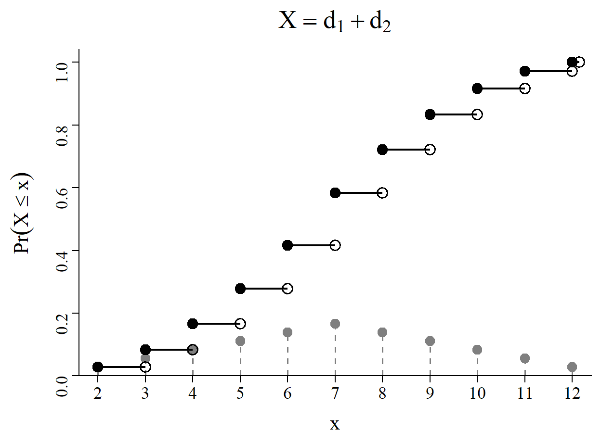
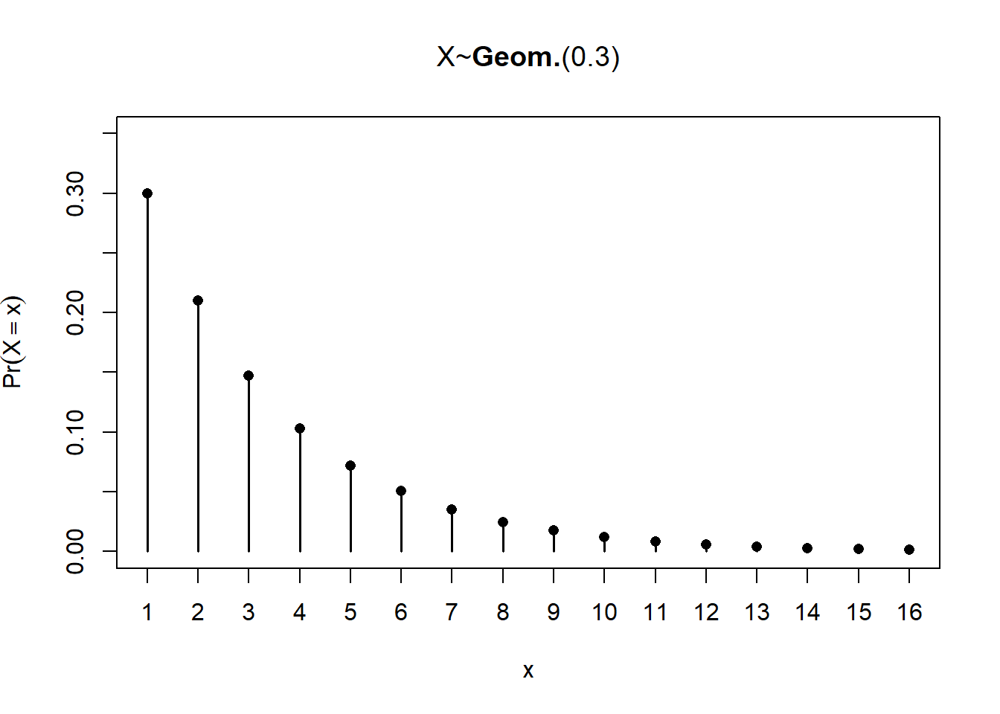
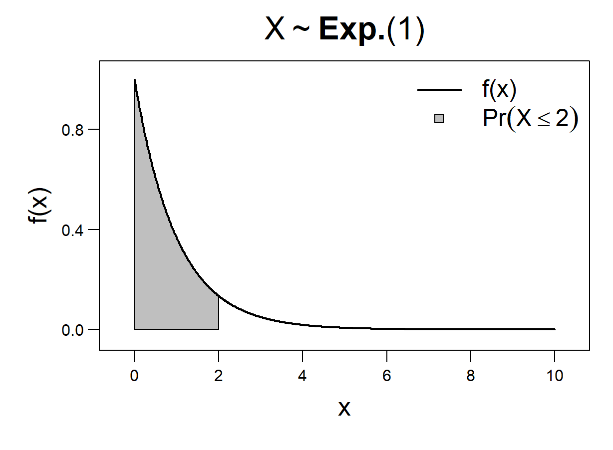
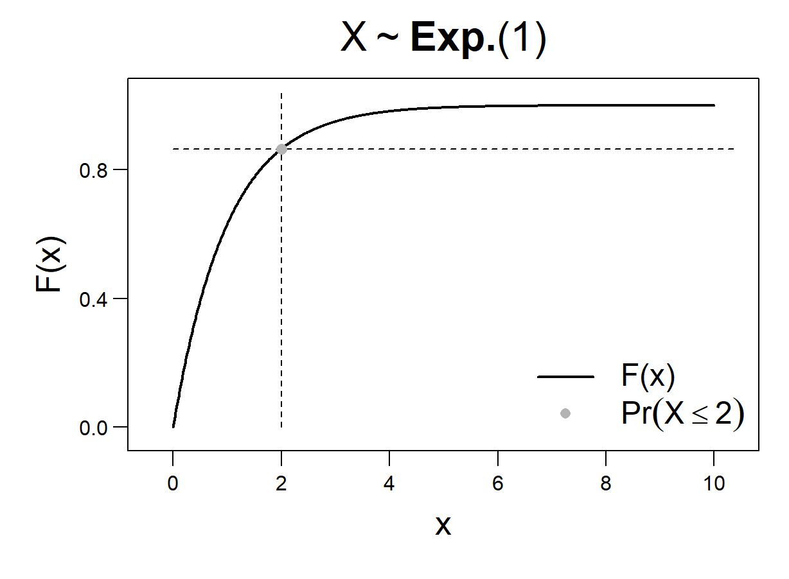
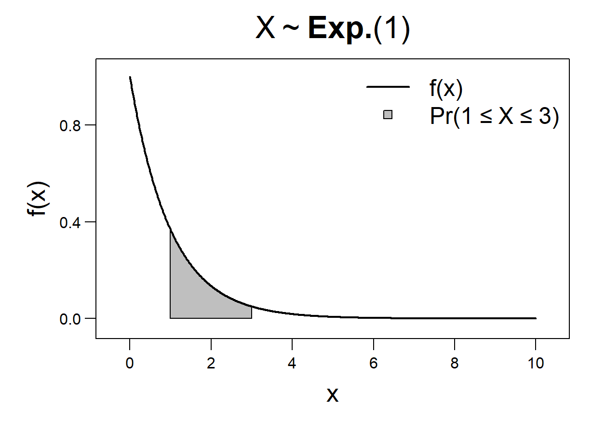
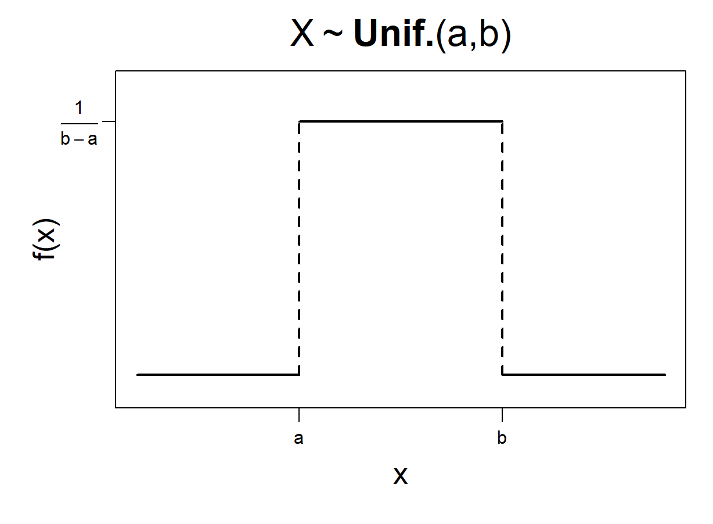
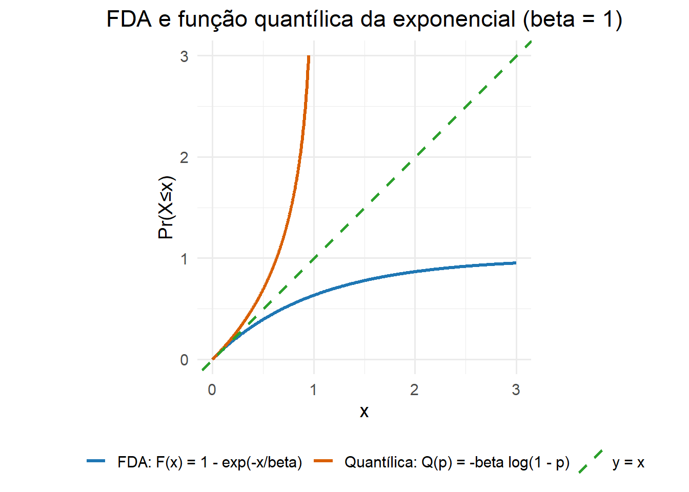

4 Variáveis Aleatórias
Leituras:
4.1 Conceito de Variável Aleatória
Variáveis aleatórias (as funções em si) serão denotadas por letras maiúsculas, enquanto valores específicos serão denotados por letras minúsculas. Ou seja, a variável \(X\) adota valores \(x\), a variável \(Z\) adota valores \(z\).
Example 4.1 Considere um jogo de azar no qual você lança dois dados cúbicos e recebe como recompensa a soma das faces.
Nosso experimento é lançar o primeiro dado, lançar o segundo dado, e então anotar as faces. Podemos escrever o espaço amostral desse experimento como
\[\begin{align*} \Omega = \left\{ \begin{matrix} (\unicode{x2680},\unicode{x2680}), & (\unicode{x2680},\unicode{x2681}), & (\unicode{x2680},\unicode{x2682}), & (\unicode{x2680},\unicode{x2683}), & (\unicode{x2680},\unicode{x2684}), & (\unicode{x2680},\unicode{x2685}), \\ (\unicode{x2681},\unicode{x2680}), & (\unicode{x2681},\unicode{x2681}), & (\unicode{x2681},\unicode{x2682}), & (\unicode{x2681},\unicode{x2683}), & (\unicode{x2681},\unicode{x2684}), & (\unicode{x2681},\unicode{x2685}), \\ (\unicode{x2682},\unicode{x2680}), & (\unicode{x2682},\unicode{x2681}), & (\unicode{x2682},\unicode{x2682}), & (\unicode{x2682},\unicode{x2683}), & (\unicode{x2682},\unicode{x2684}), & (\unicode{x2682},\unicode{x2685}), \\ (\unicode{x2683},\unicode{x2680}), & (\unicode{x2683},\unicode{x2681}), & (\unicode{x2683},\unicode{x2682}), & (\unicode{x2683},\unicode{x2683}), & (\unicode{x2683},\unicode{x2684}), & (\unicode{x2683},\unicode{x2685}), \\ (\unicode{x2684},\unicode{x2680}), & (\unicode{x2684},\unicode{x2681}), & (\unicode{x2684},\unicode{x2682}), & (\unicode{x2684},\unicode{x2683}), & (\unicode{x2684},\unicode{x2684}), & (\unicode{x2684},\unicode{x2685}), \\ (\unicode{x2685},\unicode{x2680}), & (\unicode{x2685},\unicode{x2681}), & (\unicode{x2685},\unicode{x2682}), & (\unicode{x2685},\unicode{x2683}), & (\unicode{x2685},\unicode{x2684}), & (\unicode{x2685},\unicode{x2685}) \end{matrix} \right\}. \end{align*}\]
Nossa variável aleatória é uma função \(X:\Omega\rightarrow\mathbb{R}\) que contabiliza a quantidade de pontos nas faces do primeiro dado, contabiliza a quantidade de pontos nas faces do segundo dado, e soma esses valores. Cada elemento \(\omega\in\Omega\) é composto pela dupla \((d_1,d_2)\).
\[\begin{align*} X(d_1,d_2) = d_1+d_2. \end{align*}\]
Alguns dos valores possíveis para \(X\) são
- \(X(\unicode{x2680},\unicode{x2680}) = 2\)
- \(X(\unicode{x2680},\unicode{x2681}) = 3\)
- \(X(\unicode{x2681},\unicode{x2680}) = 3\)
- …
A imagem de uma função é o subconjunto do seu contradomínio composto pelos valores possivelmente atingidos pela função.
No nosso caso,
\[\begin{align*} X[\Omega]=\{1,2,3,4,5,6,7,8,9,10,11,12\}. \end{align*}\]
Uma pergunta natural é: qual é a probabilidade de recebermos \(\$7\)? Em outras palavras quanto é \(\Pr(X=7)\)?
Como podemos obter \(X=7\)? Algumas possibilidades são
\[\begin{align*} X(\unicode{x2680},\unicode{x2685}) = 7, \quad X(\unicode{x2681},\unicode{x2684})=7, \quad X(\unicode{x2685},\unicode{x2680})=7 \end{align*}\]
O conjunto de elementos \(\omega\in\Omega\) que são mapeados pela função \(X\) ao valor 7 é \[\begin{align*} B = \{(\unicode{x2680},\unicode{x2685}), (\unicode{x2681},\unicode{x2684}),(\unicode{x2682},\unicode{x2683}),(\unicode{x2683},\unicode{x2682}),(\unicode{x2684},\unicode{x2681}),(\unicode{x2685},\unicode{x2680})\}. \end{align*}\]
Então quando falamos “probabilidade de \(X=7\)”, e escrevemos \(\Pr(X=7)\), estamos nos referindo à probabilidade do evento \(B\).
\[\begin{align*} \Pr(B) = \frac{n(B)}{n(\Omega)} = \frac{6}{36} = \frac{1}{6} = \Pr(X=7) \end{align*}\]
Chamamos \(B\) de imagem inversa de \(X=7\), ou pré-imagem de \(X=7\). \(X^{-1}[\{7\}]=B\).
A expressão \(\Pr(X=7)\) é um abuso de notação universalmente adotado. Lembre-se que uma função de probabilidade mapeia elementos do espaço de eventos (subconjuntos do espaço amostral) a valores na reta real. O número \(7\) não é um subconjunto do espaço amostral \(\Omega\), o número \(7\) é um valor \(x\in X[\Omega]\) na imagem da variável aleatória \(X\). Quando escrevemos \(\Pr(X=7)\) queremos dizer \(\Pr(B)\), com \(B=X^{-1}[\{7\}]\).
4.1.1 Tipos de variáveis aleatórias
- Uma variável aleatória é dita discreta, se adotar valores discretos, enumeráveis, como as faces dos dados no Example 4.1, ou os números reais \(\mathbb{N}\).
- Alternativamente, uma variável aleatória é dita contínua se adotar valores contínuos, não enumeráveis, como um número real ou um vetor multivariado.
Essa distinção é feita porque temos dois tratamentos diferentes para a probabilidade de um resultado individual do experimento. No caso discreto é possível falar diretamente da probabilidade de um valor específico para a v.a., enquanto no caso contínuo existem complicações adicionais e precisamos considerar a probabilidade de um intervalo para os valores adotados pela variável aleatória.
4.2 Variáveis Aleatórias Discretas
É a imagem \(X[\Omega]\), os possíveis valores, de uma variável aleatória que deve ser um conjunto enumerável para que essa seja chamada discreta. O espaço amostral \(\Omega\), domínio da variável aleatória \(X\), pode, sem nenhum problema, ser um conjunto não enumerável.
Example 4.2 Considere o experimento de lançar um dardo em um alvo como na figura abaixo. Portanto os elementos \(\omega\) do espaço amostral \(\Omega\) são coordenadas horizontais e verticais \((x,y)\) associadas ao local onde o dardo atigiu o alvo. Ou seja, \(\Omega=A\subset\mathbb{R}^2\).
Nossa variável aleatória aqui é uma função que olha para um certo elemento \((x_0,y_0)\) de \(\Omega\), compara com as divisões dos setores do alvo, e atribui a \((x_0,y_0)\) o valor numérico equivalente.

4.2.1 Função massa de probabilidade
Os subscritos \(\cdot_X\) serão omitido quando não houver ambiguidade.
- O domínio da fmp é a imagem da v.a. \(X\) (também chamado suporte da v.a.). É o conjunto \(X[\Omega]\). É o eixo horizontal nos gráficos representando a fmp.
- Os elementos \(x\in X[\Omega]\) são mapeados às suas respectivas probabilidades \(f(x)=\Pr(X=x)\). É o eixo vertical nos gráficos representando a fmp. \[\begin{align*} f:X[\Omega]\longrightarrow \mathbb R \end{align*}\]
- A função massa de probabilidade é o análogo teórico ao histograma de um conjunto de dados.
Example 4.3 Contínuando nosso Example 4.1 do lançamento dos dados, a função massa de probabilidade da variável aleatória \(X(d_1,d_2)=d_1+d_2\) é
| \(x\) | \(f(x)=\Pr(X=x)\) |
|---|---|
| 2 | \(1/36\) |
| 3 | \(2/36\) |
| 4 | \(3/36\) |
| 5 | \(4/36\) |
| 6 | \(5/36\) |
| 7 | \(6/36\) |
| 8 | \(5/36\) |
| 9 | \(4/36\) |
| 10 | \(3/36\) |
| 11 | \(2/36\) |
| 12 | \(1/36\) |
Graficamente, temos:

4.2.2 Função de probabilidade acumulada

Example 4.4 Suponha um experimento que consiste em lançar uma moeda sucessivamente até se obter a primeira cara. Chame \(H=\)cara, \(T=\)coroa. Então alguns possíveis resultados para nosso experimento (elementos do espaço amostral) são: \[\begin{align*} \omega_1 &= (H),\\ \omega_2 &= (T,H),\\ \omega_3 &= (T,T,H). \end{align*}\]
O espaço amostral \(\Omega\) é então \[\begin{align*} \Omega = \{(H), (T,H), (T,T,H), (T,T,T,H), \dots \} \end{align*}\]
Esse espaço amostral é infinito, mas é contável (um conjunto enumerável).
Defina a variável aleatória \(X=\)quantidade de lançamentos até obtermos a primeira cara \(H\). Como os lançamentos são independentes e precisamos de \(x-1\) coroas até a primeira cara, não é difícil perceber que
\[\begin{align*} \Pr(X=x) = (1-p)^{x-1}p, \quad x=1,2,\dots. \end{align*}\]
Essa é a função massa de probabilidade da distribuição geométrica. (Obs.: uma “variável aleatória geométrica” e uma “distribuição geométrica” são sinônimos.)

4.3 Média de uma Variável Aleatória
A média de uma variável aleatória discreta é a soma de todos os seus possíveis valores, cada um ponderado por sua probabilidade individual.
No caso do nosso Example 4.1 da soma das faces no lançamento de dois dados, podemos calcular a média como na tabela baixo. Nesse caso, \(E(X)=7\).
| \(x\) | \(\Pr(X = x)\) | \(x \Pr(X = x)\) |
|---|---|---|
| 2 | \(1/36\) | \(2/36\) |
| 3 | \(2/36\) | \(6/36\) |
| 4 | \(3/36\) | \(12/36\) |
| 5 | \(4/36\) | \(20/36\) |
| 6 | \(5/36\) | \(30/36\) |
| 7 | \(6/36\) | \(42/36\) |
| 8 | \(5/36\) | \(40/36\) |
| 9 | \(4/36\) | \(36/36\) |
| 10 | \(3/36\) | \(30/36\) |
| 11 | \(2/36\) | \(22/36\) |
| 12 | \(1/36\) | \(12/36\) |
| \(\sum\) | \(36/36\) | \(7\) |
4.3.1 Propriedades do valor esperado
Sejam \(X,Y\) uma variávei aleatórias definidas no mesmo espaço amostral \(\Omega\) e \(a,b\) números reais. Então as propriedades abaixo são válidas:
- \(E(aX) = aE(X)\). O valor esperado de um múlitiplo escalar da variável original é o múltiplo escalar do valor esperado.
- \(E(X+a) = E(X)+a\). O valor esperado de uma variável mais uma constante é o valor esperado da variável, mais a constante.
- \(E(aX+b) = aE(X)+b\). Combinação das propriedade (a) e propriedade (b).
- \(E(X+Y) = E(X)+E(Y)\). O valor esperado da soma de duas variáveis aleatórias é a soma dos valores esperados das variáveis (tomados individualmente).
Essas propriedades vêm da natureza linear do operador \(E[\cdot]\) (é uma soma de diferentes parcelas). É bem direto e fica a cargo do leitor mostrar as propriedades (a),(b), (c).
4.3.2 Média de uma função de uma variável aleatória
Nós conseguimos calcular a média de uma função \(g(\cdot)\) da variável aleatória \(X\) sem conhecer, diretamente, a distribuição de probabilidades de \(g(X)\).
Esse resultado facilita enormemente o cálculo de momentos da variável. Em especial vai ser importante para calcularmos variância.
Continuando com o Example 4.1, defina \(Y(X)=(X-7)^2\). Queremos \(E(Y)=E[(X-7)^2]\). Primeiro iremos construir a distribuição de probabilidades de \(Y\) e calcular a média diretamente como \(E(Y)=\sum_y y\Pr(Y=y)\), depois iremos calcular \(E(Y)=\sum_x Y(x)\Pr(X=x)\) e ver que os resultados são os mesmos. (Esse resultado não é imediatamente óbvio porque \(Y(X)\) não é uma função bijetora!)
Construindo diretamente a variável aleatória \(Y(X)=(X-7)^2\):
| \(y\) | \(\Pr(Y = y)\) | \(y \Pr(Y = y)\) |
|---|---|---|
| 0 | \(6/36\) | \(0\) |
| 1 | \(10/36\) | \(10/36\) |
| 4 | \(8/36\) | \(32/36\) |
| 9 | \(6/36\) | \(54/36\) |
| 16 | \(4/36\) | \(64/36\) |
| 25 | \(2/36\) | \(50/36\) |
| \(\sum\) | \(36/36\) | \(210/36 = 35/6\) |
Usando as probabilidades originais \(\Pr(X=x)\):
| \(x\) | \(Y(x)=(x-7)^2\) | \(\Pr(X=x)\) | \(Y(x)\Pr(X=x)\) |
|---|---|---|---|
| 2 | 25 | \(1/36\) | \(25/36\) |
| 3 | 16 | \(2/36\) | \(32/36\) |
| 4 | 9 | \(3/36\) | \(27/36\) |
| 5 | 4 | \(4/36\) | \(16/36\) |
| 6 | 1 | \(5/36\) | \(5/36\) |
| 7 | 0 | \(6/36\) | \(0\) |
| 8 | 1 | \(5/36\) | \(5/36\) |
| 9 | 4 | \(4/36\) | \(16/36\) |
| 10 | 9 | \(3/36\) | \(27/36\) |
| 11 | 16 | \(2/36\) | \(32/36\) |
| 12 | 25 | \(1/36\) | \(25/36\) |
| \(\sum\) | \(36/36\) | \(210/36 = 35/6\) |
4.4 Variância de uma Variável Aleatória
Propriedades da variância
- \(Var(X+a)=Var(X)\)
- \(Var(aX)=a^2Var(X)\)
- \(Var(aX+b)=a^2Var(X)\)
- \(Var(aX\pm bY)=a^2Var(X)+b^2Var(Y)\pm 2abCov(X,Y)\)
Representação alternativa da variância
A variância é o segundo momento centrado na média: \(Var(X) = E[(X-E(X))^2]\). Alternativamente, podemos representar a variância como uma função do primeiro momento \(E(X)\) e o segundo momento \(E(X^2)\) não centrados (sem subtraír a média).
\[\begin{align*} Var(X) &= E[(X-E(X))^2] \\ &= E[X^2-2XE(X)+E(X)^2] \\ &= E(X^2)-E[2XE(X)] + E(X)^2 \\ &= E(X^2)-2E(X)E(X)+E(X)^2 \\ &= E(X^2)-E(X)^2. \end{align*}\]
Portanto podemos escrever
\[\begin{align*} Var(X) = E(X^2)-E(X)^2. \end{align*}\]
Ainda no Example 4.1, perceba que, porque \(E(X)=7\), quando fizemos \(Y=(X-7)^2\) e calculamos \(E(Y)\) nós estávamos computando \(Var(X)=35/6\). Vamos calcular \(Var(X)=E(X^2)-E(X)^2\).
| \(x\) | \(\Pr(X = x)\) | \(x \Pr(X = x)\) | \(x^2 \Pr(X = x)\) |
|---|---|---|---|
| 2 | \(1/36\) | \(2/36\) | \(4/36\) |
| 3 | \(2/36\) | \(6/36\) | \(18/36\) |
| 4 | \(3/36\) | \(12/36\) | \(48/36\) |
| 5 | \(4/36\) | \(20/36\) | \(100/36\) |
| 6 | \(5/36\) | \(30/36\) | \(180/36\) |
| 7 | \(6/36\) | \(42/36\) | \(294/36\) |
| 8 | \(5/36\) | \(40/36\) | \(320/36\) |
| 9 | \(4/36\) | \(36/36\) | \(324/36\) |
| 10 | \(3/36\) | \(30/36\) | \(300/36\) |
| 11 | \(2/36\) | \(22/36\) | \(242/36\) |
| 12 | \(1/36\) | \(12/36\) | \(144/36\) |
| \(\sum\) | \(36/36\) | \(252/36 = 7\) | \(1974/36 = 329/6\) |
Então \[\begin{align*} Var(X) &= E(X^2)-E(X)^2 \\ &= 329/6 - 7^2 \\ &= \frac{329 - 6\times 49}{6} \\ &= \frac{35}{6}. \end{align*}\]
4.5 Variáveis Aleatórias Contínuas
Agora considerarmos casos nos quais a imagem da variável aleatória é um conjunto não enumerável. Aqui não é direto atribuir probabilidade a um certo valor específico da variável aleatória (a função massa de probabilidades \(\Pr(X=x)\)) como fizemos até agora.
Comentários:
- O valor \(f_X(x)\) (fdp) não tem a mesma interpretação \(\Pr(X=x)\) (fmp) do caso discreto.
- \(f_x(x)\) não é uma probabilidade (é uma “densidade”) e não precisa adotar valores entre 0 e 1 (o que tem que somar 1 é a área total abaixo de \(f_X(\cdot)\)).
- Podemos interpretar \(f_x(x)\) como o análogo teórico à densidade de frequência de uma classe em um histograma (normalizado) de um conjunto de dados.
- O tratamento de variáveis aleatórias contínuas requer, invariavelmente, a aplicação de cálculo diferencial e integral. Dito isso, manipulações algébricas não são nosso foco. O importante é entender como os conceitos se relacionam e conseguir aplicar em problemas práticos.
- Em muitos casos nem é possível obter uma fórmula fechada para a função densidade acumulada \(F_X(\cdot)\).
Example 4.5 (Distribuição exponencial) Dizemos que a variável aleatória \(X\) tem distribuição exponencial com parâmetro de escala \(\beta\) se sua função densidade de probabilidade tiver a forma
\[\begin{align*} f(x; \beta) = \begin{cases} \frac{1}{\beta}e^{-x/\beta}, \quad \text{ se }x\geq 0,\\ 0, \quad \text{ caso contrário}. \end{cases} \end{align*}\]
A distribuição exponencial é o análogo contínuo à distribuição geométrica. Esse modelo é bastante utilizado para modelar o tempo até a ocorrência de um certo evento (por exemplo o tempo de espera em um call center, ou o tempo até a falha de um certo componente mecânico).
Por simplicidade, suponha \(\beta=1\). (Não mostraremos agora, mas \(E(X)=\beta\) e \(Var(X)=\beta^2\). É o tempo médio até a ocorrência do evento. Quanto maior \(\beta\), esperamos ver maiores valores de \(X\).)
Queremos, por exemplo \(\Pr(X\leq 2)\). Vamos calcular a função de densidade acumulada \(F(X)\) e avaliar em \(x=2\).
\[\begin{align*} F(X;\beta=1)=\Pr(X\leq x) &= \int_0^\infty e^{-t}dt \\ &= \left[-e^{-t}\right]^x_0 = -e^{-x}-(-e^{-0}) \\ &= 1-e^{-x} \end{align*}\]
Então \(F(2;\beta=1)=1-e^{-2}\approx 0.864664\). É a área abaixo da função densidade de probabilidade \(f(x)\) para \(0<x<2\).

Alternativamente, podemos olhar para a função densidade acumulada \(F(X)=\Pr(X\leq x)\). Daí \(\Pr(X\leq 2)\) é o valor \(F(2)\) em si.

Se quiseremos, por exemplo, \(\Pr(1\leq X\leq 3)\), avaliamos a área abaixo de \(f(x)\) para \(1\leq x \leq 3\).
\[\begin{align*} \Pr(1\leq X \leq 3) &= \int_1^3 f(x)dx \\ &=F(3)-F(1)\\ &=(1-e^{-3})-(1-e^{-1})\\ &=e^{-1}-e^{-3}\approx 0.31809 \end{align*}\]

Média e variância de uma variável aleatória contínua
Quando \(X\) é uma variável aleatória contínua a definição de média (valor esperado) é análoga ao caso discreto, mas substituimos somatórios por integrais.
Não vou enunciar formalmente, mas podemos tomar \(E(g(X))\) (valor esperado de uma função da variável) usando as probabilidades originais \(f(x)\) da mesma forma que vimos no caso discreto.
Example 4.6 (Média da distribuição uniforme) Dizemos que a variável aleatória \(X\) tem distribuição uniforme se ela adotar valores entre \(a\) (valor mínimo) e \(b\) (valor máximo), e quaisquer intervalos de mesma amplitude forem igualmente prováveis.
A função densidade de probabilidade de \(X\sim \text{Unif.}(a,b)\) é \[\begin{align*} f(x;a,b) = \begin{cases} \frac{1}{b-a}, \text{ se }a\leq x\leq b,\\ 0, \text{ caso contrário} \end{cases} \end{align*}\]

Vamos calcular \(E(X)\).
\[\begin{align*} E(X) &= \int_a^b \frac{x}{b-a}dx \\ &=\frac{1}{b-a}\int_a^b xdx \\ &=\frac{1}{b-a}\left[\frac{x^2}{2}\right]^b_a\\ &=\frac{1}{b-a}\left(\frac{b^2-a^2}{2}\right)\\ &=\frac{a+b}{2}. \end{align*}\]
Faz sentido intuitivo, \((a+b)/2\) é o ponto médio do intervalo \([a,b]\).
Example 4.7 (Variância da distribuição uniforme) Vamos calcular a variância da distribuição uniforme usando \(Var(X)=E(X^2)-E(X)^2\). Temos \(E(X)=(a+b)/2\), falta \(E(X^2)\).
\[\begin{align*} E(X^2) &= \int_{-\infty}^\infty x^2 f(x)dx \\ &= \int_a^b \frac{x^2}{b-a}dx \\ &= \frac{1}{b-a} \left[\frac{x^3}{3}\right]^b_a\\ &= \frac{b^3-a^3}{3(b-a)}. \end{align*}\]
Então,
\[\begin{align*} Var(X) &= E(X^2)-E(X)^2 \\ &= \frac{b^3-a^3}{3(b-a)}-\left(\frac{a+b}{2}\right)^2. \end{align*}\]
Depois de algumas manipulações algébricas (a cargo do leitor) podemos escrever
\[\begin{align*} Var(X) = \frac{(b-a)^2}{12}. \end{align*}\]
Portanto a média é o primeiro momento, a variância é o segundo momento centrado na média.
4.6 Função Quantílica
Recapitulando pontos de nossa discussão até aqui:
- Uma variável aleatória é uma função que mapeia elementos do espaço amostral a valores na reta real: \(X:\Omega\rightarrow\mathbb R\).
- As função massa de probabilidade \(\Pr(X=x)\), no caso discreto (ver Figura 00), ou função densidade de probabilidade \(f(x)\), no caso contínuo (ver Figura 00), se relacionam à probabilidade de um certo valor específico \(x\) na imagem da variável aleatória \(X\).
- A função de probabilidade acumulada (ou função de distribuição acumulada) nos dá a probabilidade de obter um valor igual a \(x\) ou menor: \(F(x)=\Pr(X\leq x)\). (Ver Figuras 00, 00.)
Nós vamos definir agora a função inversa da função de distribuição acumulada. Se inicialmente \(F(x)\) mapeia o valor \(x\) à probabilidade \(q\) de obter \(X\leq x\); a função inversa \(F^{-1}(q)\) mapeia probabilidades \(q\) ao valor específico \(x\) tal que \(\Pr(X\leq x)=q\). Às vezes chamamos \(F^{-1}(q)\) de função quantílica de \(X\).
Example 4.8 Seja \(X\sim \text{Exp.}(\beta)\). Qual é a mediana de \(X\)?
Lembrando que a função densidade de probabilidade de \(X\) é
\[\begin{align*} f(x) = \begin{cases}\frac{1}{\beta}e^{-x/\beta}, \text{ se }x>0, \\ 0, \text{ caso contrátio}. \end{cases} \end{align*}\]
Já calculamos que sua função de distribuição acumulada é dada por \[\begin{align*} F(X) = \int_0^\infty f(x)dx = 1-e^{-x/\beta}. \end{align*}\]
É direto calcular função de distribuição acumulada inversa (ou função quantílica) de \(X\) como
\[\begin{align*} F^{-1}(q) = -\beta\log(1-q). \end{align*}\]
Então a mediana de \(X\) é \(F^{-1}(0.5)\).
\[\begin{align*} F^{-1}(0.5)&=-\beta\log(1-0.5)\\ &=\beta\log(2). \end{align*}\]
De maneira genérica, qualquer \(q\)-quantil teórico pode ser obtido ao avaliar \(F^{-1}(q)\).
Ilustração numérica:
50%
0.6914558 [1] 0.6931472Ilustração gráfica:

4.7 Variáveis Aleatórias Multidimensionais
Example 4.9 (Variável aleatória discreta bivariada)
| Chuva (\(X = 0\)) | Sem chuva (\(X = 1\)) | Total | |
|---|---|---|---|
| Deslocamento longo (\(Y = 0\)) | 0.15 | 0.07 | 0.22 |
| Deslocamento curto (\(Y = 1\)) | 0.15 | 0.63 | 0.78 |
| Total | 0.30 | 0.70 | 1.00 |
- SW15 capítulo 1.
4.8 Exercicios
Bussab, Wilton O, and Pedro A Morettin. 2010. Estatı́stica básica. 6th ed. Saraiva.